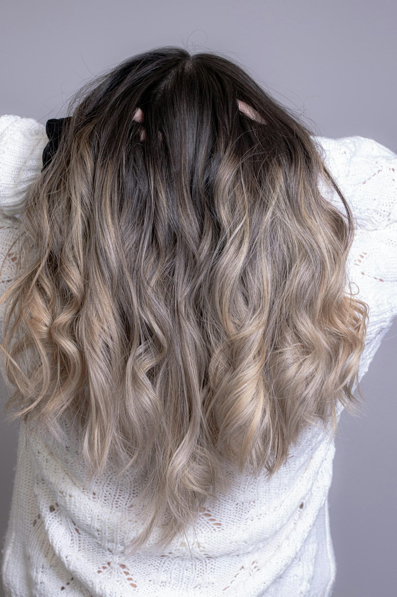
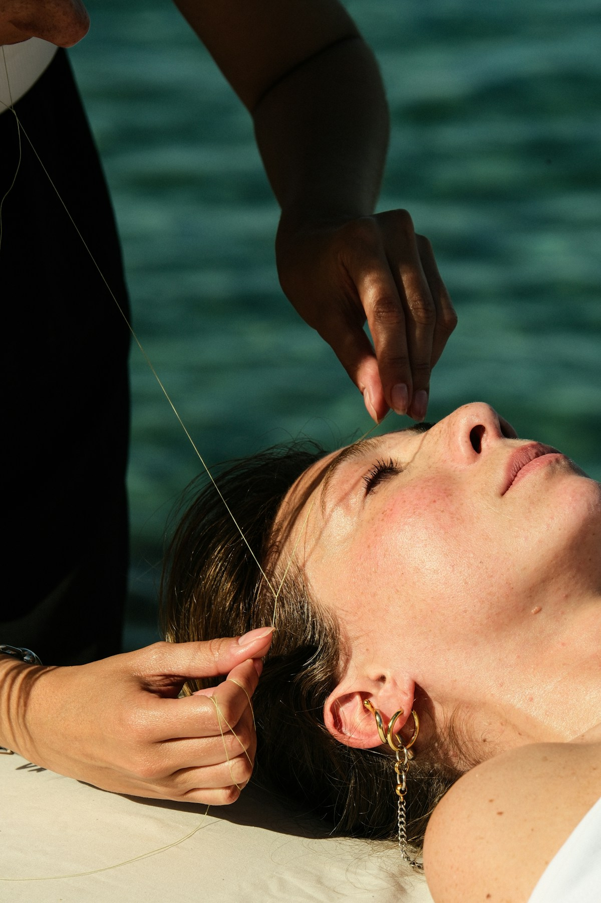
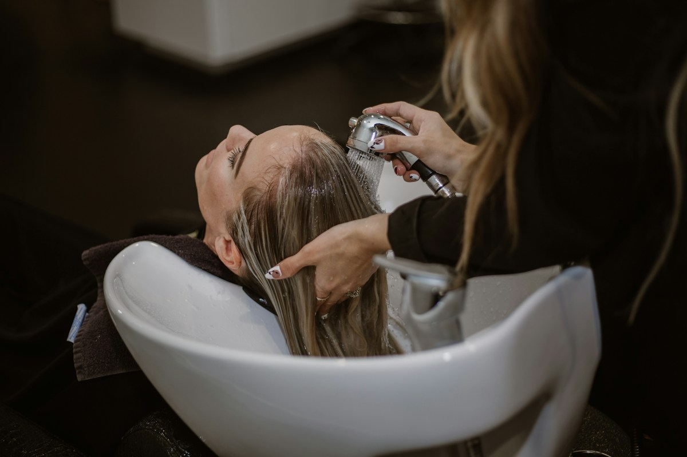
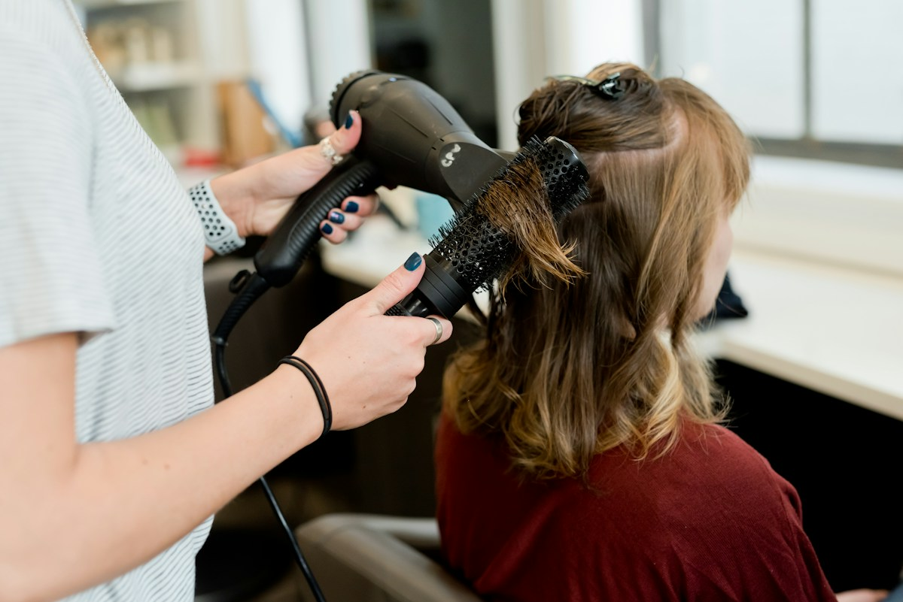
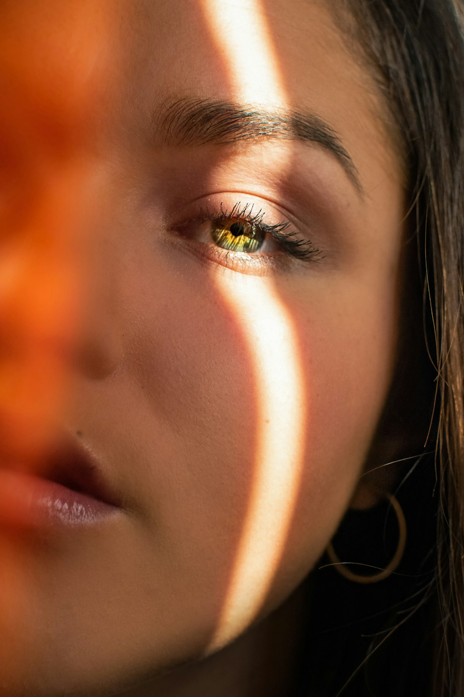

تصاویر و فناوری
عکسهای واقعی زیر از Unsplash با مجوز استفاده در وبسایت دانلود شدهاند. این تصاویر معرفی فضای واقعی سالن، کارکنان یا مشتریان ماهآرا نیستند و تأیید این برند توسط افراد داخل عکسها را القا نمیکنند.







فهرست کامل منابع، مجوزها و اثر انگشت فایلها
تصاویر اختصاصی مجموعهٔ ظاهرها
تصویر اصلی و چهار پرترهٔ مجموعهٔ ظاهرها با ابزار تولید تصویر OpenAI برای این پروژه ساخته شدهاند و نمونهکار واقعی سالن نیستند.
هویت بصری و تایپوگرافی
نشان چهره از تصویر ارسالی صاحب پروژه گرفته شده و نوشتهٔ Salon با ابزار ویرایش تصویر به Mah Ara تغییر یافته است. زمینهٔ فایل شفاف است. فونت استعداد، اثر پروژهٔ Estedad، با مجوز SIL Open Font License 1.1 بهصورت محلی بارگذاری میشود.
مجوز فونت استعداد · پروژهٔ اصلی فونت
فناوری پیشنمایش
تشخیص چهره و تفکیک مو با MediaPipe Tasks Vision انجام میشود. عکسها در مرورگر پردازش میشوند و این سایت آنها را به سرور نمیفرستد.
MediaPipe — Apache License 2.0 · Face Landmarker · Image Segmenter
نوبت و فرم مشاوره روی همان دستگاه ذخیره میشوند. پرداخت، پیامرسانی و تقویم مشترک سالن به این نسخه متصل نیستند.